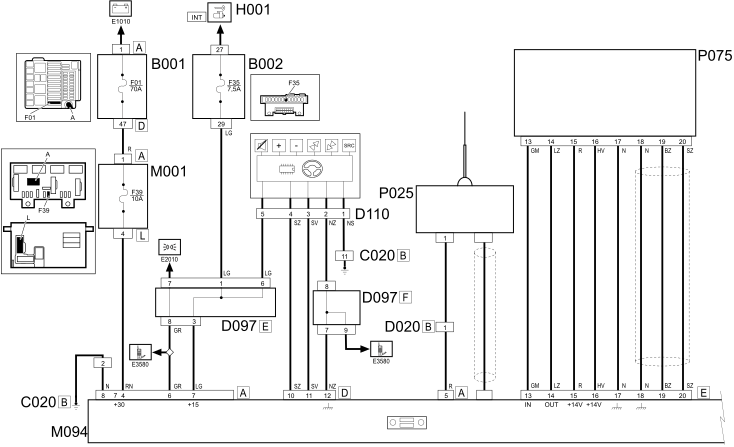
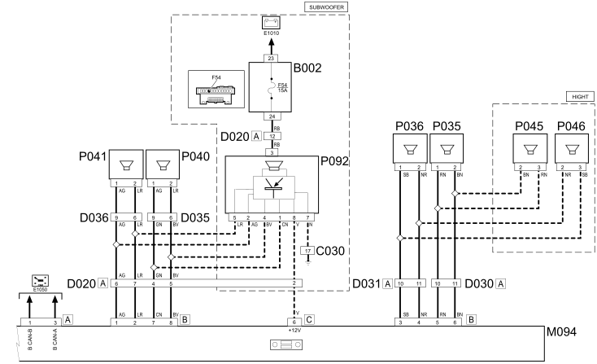

E3510 RADIO - WIRING DIAGRAM
- Path
- Electrical equipment > 1 ELECTRICAL FUNCTIONS > E35 Radio accessories > E3510 RADIO > E3510 RADIO - WIRING DIAGRAM
- Kind
- wiring diagram
- Applies to
- all engines; all production periods
- Interactive page
- https://sloeber94.github.io/elrnDB-fPnd/en/#/169002545
Applies to: all engines; all production periods
Wiring diagram


COMPONENTS
Component code | Name | Assembly reference |
|---|---|---|
Engine compartment junction unit | ||
Junction unit under dashboard | ||
Passenger side dashboard earth | - | |
Left rear earth | - | |
Clock spring and steering wheel controls coupling | - | |
/Rear dashboard coupling | - | |
Rear dashboard coupling | - | |
Front left door connection | - | |
Front right door connection | - | |
Rear left door connection | - | |
Rear right door connection | - | |
Short circuiting coupling | - | |
Ignition switch | ||
Body computer | ||
Radio Receiver Node | - | |
Aerial amplifier/power supply | ||
Aerial amplifierpower supply | ||
Speaker in left front door | ||
Speaker in right front door | ||
Speaker in rear left door | ||
Speaker in rear right door | ||
Front left tweeter speaker | - | |
Front right tweeter speaker | - | |
CD / multi-player | - | |
CD multi-player | - | |
Subwoofer | - |
Topics linked from this page (27)
- 5505A multi-function components
- 5505C vehicle compartment wiring
- 5520A ignition switch
- 5570T car radio and car telephone
- B001 JUNCTION UNIT
- B002 JUNCTION UNIT UNDER DASHBOARD
- C020 PASSENGER SIDE DASHBOARD EARTH
- C030 LEFT REAR EARTH
- D020 DASHBOARD/REAR COUPLING
- D030 DRIVER'S FRONT DOOR COUPLING
- D031 PASSENGER FRONT DOOR COUPLING
- D035 LEFT REAR DOOR COUPLING
- D036 RIGHT REAR DOOR COUPLING
- D097 SHORT CIRCUITING COUPLING
- D110 CLOCK SPRING AND STEERING WHEEL CONTROLS COUPLING
- H001 IGNITION SWITCH
- M001 BODY COMPUTER
- M094 RADIO RECEIVER NODE
- P025 AERIAL POWER SUPPLY
- P035 SPEAKER IN DRIVER'S FRONT DOOR
- P036 SPEAKER IN PASSENGER FRONT DOOR
- P040 SPEAKER IN REAR LEFT DOOR
- P041 SPEAKER ON RIGHT REAR DOOR
- P045 DRIVER'S FRONT TWEETER SPEAKER
- P046 PASSENGER SIDE FRONT TWEETER SPEAKER
- P075 CD PLAYER/CHANGER
- P092 SUBWOOFER